Unidad 5. Elementos de la administración
Unidad 5. Elementos de la administración
Introducción
La administración permite que las organizaciones alcancen sus objetivos mediante el uso adecuado de sus recursos humanos, materiales, financieros y tecnológicos.
Para lograrlo, es necesario seguir un proceso que facilite anticipar situaciones, establecer objetivos, organizar actividades, integrar al personal, dirigir esfuerzos y evaluar resultados.
En esta unidad conoceremos los elementos que conforman el proceso administrativo y su aplicación en empresas y situaciones cotidianas.
Objetivo de la unidad
Comprender los elementos del proceso administrativo, identificando la función de la previsión, planeación, organización, integración de personal, dirección y control, para reconocer su importancia en el funcionamiento de las organizaciones.
Temario
Elementos de la administración
5.1. El proceso administrativo
5.2. Previsión
5.3. Planeación
5.4. Organización
5.5. Integración de personal
5.6. Dirección
5.7. Control
¿Qué aprenderá el alumno en la Unidad 5?
¿Qué aprenderá el alumno en la Unidad 5?
Al finalizar esta unidad, el alumno será capaz de:
- Comprender qué es el proceso administrativo y por qué es importante para las organizaciones.
- Identificar las seis etapas del proceso administrativo y la función de cada una.
- Reconocer la importancia de la previsión para anticipar situaciones y necesidades.
Explicar cómo la planeación permite establecer objetivos y definir acciones. - Distinguir cómo la organización y la integración de personal contribuyen al funcionamiento de una empresa.
- Comprender la función de la dirección en la coordinación y motivación de los trabajadores.
- Analizar cómo el control permite evaluar resultados y realizar mejoras.
- Aplicar los elementos del proceso administrativo mediante ejemplos de pequeñas empresas y situaciones cotidianas.
Al concluir la unidad, el alumno comprenderá cómo se relacionan las diferentes etapas del proceso administrativo y podrá identificar su aplicación práctica en una organización.
5.1. El proceso administrativo
5.1. El proceso administrativo
¿Qué es el proceso administrativo?
Es un conjunto de etapas relacionadas entre sí que permiten planear, organizar, coordinar y supervisar las actividades de una organización para alcanzar sus objetivos.
El proceso administrativo ayuda a responder preguntas fundamentales:
- ¿Qué queremos lograr?
- ¿Qué necesitamos para conseguirlo?
- ¿Quién realizará cada actividad?
- ¿Cómo coordinaremos el trabajo?
- ¿Cómo sabremos si alcanzamos los resultados esperados?
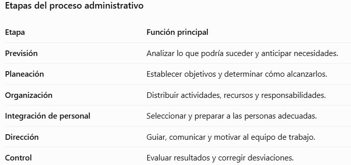
Ejemplo práctico: apertura de una cafetería
Imaginemos que una persona desea abrir una cafetería cerca de una universidad.
Previsión: Investiga si existe demanda de café y alimentos entre los estudiantes.
Planeación: Define su presupuesto, precios, horarios y metas de ventas.
Organización: Distribuye las actividades de compras, preparación, atención y limpieza.
Integración de personal: Contrata y capacita a quienes atenderán el negocio.
Dirección: Supervisa al equipo, comunica indicaciones y resuelve problemas.
Control: Revisa las ventas, los gastos y la satisfacción de los clientes para realizar mejoras.
Importancia del proceso administrativo
Su aplicación permite reducir la improvisación, aprovechar mejor los recursos, establecer responsabilidades, coordinar al personal y detectar problemas oportunamente.
El proceso administrativo no consiste únicamente en establecer planes, sino en convertirlos en acciones organizadas y verificar sus resultados.
¿Por qué consideras que un negocio puede fracasar aun cuando tiene una buena idea, si no aplica correctamente el proceso administrativo?
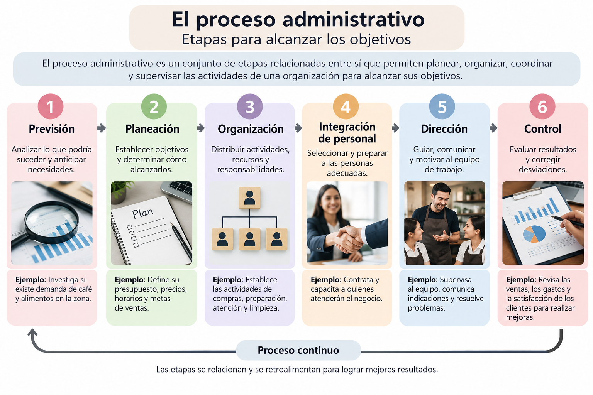
5.2. Previsión
5.2. Previsión
¿Qué es la previsión?
La previsión es la etapa del proceso administrativo que permite anticipar situaciones futuras mediante el análisis de información, necesidades, oportunidades y posibles riesgos.
Su finalidad es reducir la incertidumbre y proporcionar información útil para tomar decisiones antes de actuar.
En términos sencillos, prever significa analizar lo que podría suceder para estar mejor preparados.
¿Para qué sirve la previsión?
- Identificar oportunidades y posibles problemas.
- Anticipar las necesidades de recursos.
- Analizar las condiciones del entorno.
- Disminuir riesgos antes de tomar decisiones.
- Preparar diferentes alternativas de acción.
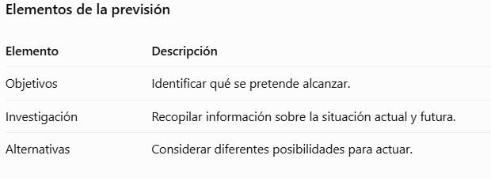
Ejemplo práctico: una cafetería universitariaUna persona desea abrir una cafetería cerca de una universidad. Antes de invertir, realiza las siguientes actividades:
- Investiga cuántos estudiantes podrían comprar sus productos.
- Observa los precios y servicios de las cafeterías cercanas.
- Identifica los horarios de mayor movimiento.
- Calcula posibles riesgos, como temporadas de vacaciones o aumento de precios.
- Considera diferentes opciones para iniciar el negocio.
Estas acciones corresponden a la previsión, porque permiten anticipar las condiciones que podrían afectar al negocio.
Diferencia entre previsión y planeación
Es importante no confundir estas dos etapas.
- Previsión: ¿Qué podría suceder?
- Planeación: ¿Qué vamos a hacer y cómo lo lograremos?
Por ejemplo, prever que habrá menos clientes durante las vacaciones permite posteriormente planear promociones o ajustar las compras.
Importancia de la previsión
La previsión no garantiza conocer exactamente el futuro, pero ayuda a que las decisiones se basen en información y no únicamente en suposiciones.
Una buena administración comienza por anticipar las situaciones que pueden favorecer o dificultar el cumplimiento de los objetivos.
¿Qué problemas podría enfrentar una persona que abre un negocio sin investigar previamente las necesidades de sus clientes y las condiciones del mercado?
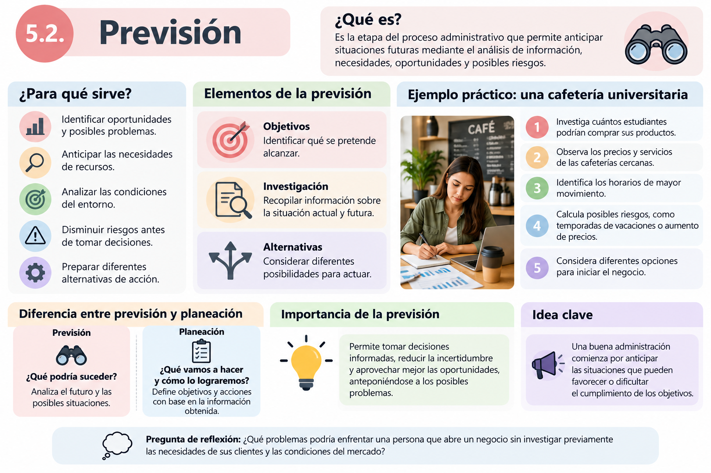
5.3. Planeación
5.3. Planeación
¿Qué es la planeación?
La planeación es la etapa del proceso administrativo en la que se establecen los objetivos de una organización y se determinan las acciones, los recursos y los tiempos necesarios para alcanzarlos.
Consiste en decidir anticipadamente qué se va a hacer, cómo, cuándo, con qué recursos y quiénes participarán.
A diferencia de la previsión, que analiza lo que podría suceder, la planeación define las acciones que se llevarán a cabo.
¿Por qué es importante la planeación?
- La planeación permite:
- Establecer objetivos claros y alcanzables.
- Evitar la improvisación y reducir riesgos.
- Aprovechar adecuadamente los recursos.
- Coordinar las actividades de los trabajadores.
- Establecer prioridades y tiempos de ejecución.
- Contar con una referencia para evaluar los resultados.
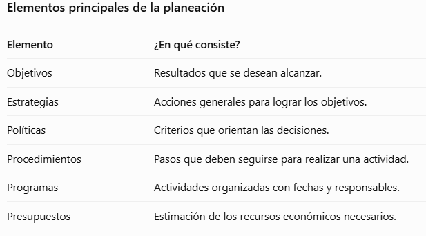
Ejemplo práctico: una cafetería universitaria
Una cafetería desea incrementar sus ventas durante el siguiente mes.
Objetivo: Incrementar las ventas un 15 % en un mes.
Estrategia: Ofrecer combos de desayuno a precios accesibles.
Programa: Lanzar la promoción durante cuatro semanas.
Presupuesto: Destinar $1,500 a publicidad y materiales promocionales.
Al finalizar el mes, la cafetería podrá comparar las ventas obtenidas con el objetivo establecido.
Características de una buena planeación
Una planeación efectiva debe ser:
- Clara: Sus objetivos y actividades deben comprenderse fácilmente.
- Realista: Debe considerar los recursos disponibles.
- Flexible: Debe permitir ajustes cuando cambien las circunstancias.
- Medible: Sus resultados deben poder evaluarse.
- Coordinada: Las actividades deben contribuir a un mismo objetivo.
- ¿Qué sucede cuando no existe planeación?
Una empresa que no planea puede enfrentar gastos innecesarios, falta de materiales, actividades desorganizadas, incumplimiento de fechas y dificultades para alcanzar sus objetivos.
La planeación transforma los objetivos en acciones concretas y establece el camino que debe seguir una organización para alcanzar los resultados deseados.
Si deseas iniciar un pequeño negocio, ¿qué tres aspectos considerarías indispensables al elaborar tu plan de trabajo y por qué?
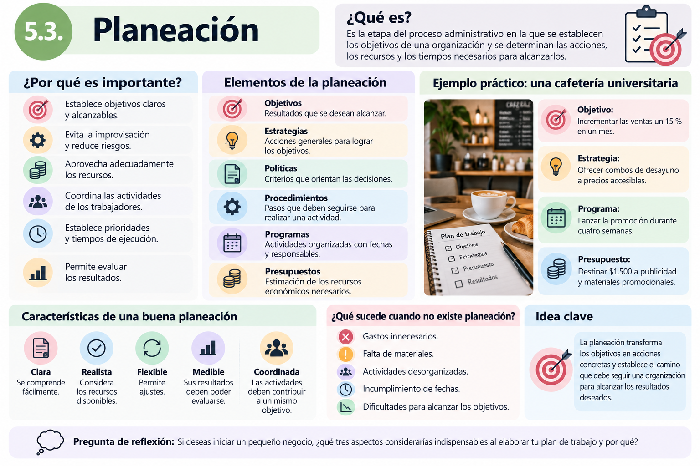
5.4. Organización
5.4. Organización
¿Qué es la organización?
La organización es la etapa del proceso administrativo que consiste en distribuir las actividades, asignar responsabilidades y coordinar los recursos necesarios para alcanzar los objetivos establecidos durante la planeación.
Su propósito es lograr que cada integrante de una empresa conozca sus funciones y que las actividades se realicen de manera ordenada y eficiente.
En términos sencillos: organizar significa determinar qué se debe hacer, quién lo hará y con qué recursos.
¿Por qué es importante la organización?
Una organización adecuada permite:
- Distribuir claramente las tareas y responsabilidades.
- Evitar la duplicación de actividades.
- Aprovechar mejor los recursos disponibles.
- Establecer líneas de autoridad y comunicación.
- Facilitar el trabajo en equipo.
- Mejorar la productividad y el cumplimiento de objetivos.
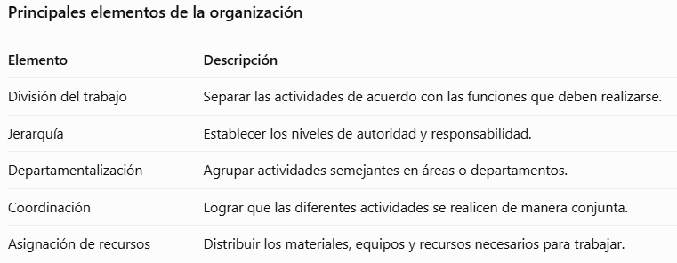
¿Qué es un organigrama?
Un organigrama es una representación gráfica de la estructura de una empresa. Permite identificar los puestos, los niveles de autoridad y las relaciones entre las diferentes áreas.
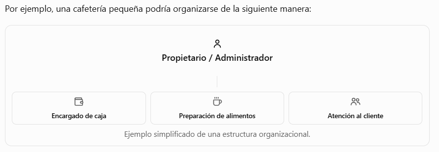
Ejemplo práctico: organización de una cafetería universitaria
Una cafetería ya estableció su presupuesto y sus metas de ventas. Ahora necesita organizar su funcionamiento.
1. Distribución de actividades: Se identifican las tareas de compras, preparación de alimentos, cobro y atención al cliente.
2. Asignación de responsabilidades: Cada trabajador recibe funciones específicas según sus capacidades.
3. Establecimiento de autoridad: El administrador supervisa las actividades y toma decisiones generales.
4. Distribución de recursos: Se asignan utensilios, equipos, materiales y espacios para cada actividad.
5. Coordinación: Los trabajadores colaboran para atender oportunamente los pedidos.
De esta manera, la cafetería puede funcionar con mayor orden y evitar confusiones.
Diferencia entre planeación y organización
Aunque están relacionadas, cumplen funciones diferentes:
- Planeación: Determina qué objetivos se desean alcanzar y cómo se pretende lograrlos.
- Organización: Establece la estructura, las responsabilidades y los recursos necesarios para ejecutar lo planeado.
Por ejemplo, la planeación establece la meta de atender a 100 clientes diarios, mientras que la organización distribuye las funciones del personal para alcanzar esa meta.
¿Qué sucede cuando una empresa no se organiza adecuadamente?
Pueden presentarse problemas como actividades duplicadas, falta de comunicación, conflictos entre trabajadores, desperdicio de recursos y retrasos en el cumplimiento de las tareas.
La organización transforma los planes en una estructura de trabajo, definiendo responsabilidades y coordinando recursos para que las actividades se desarrollen eficientemente.
¿Qué problemas podrían surgir en una empresa si varios trabajadores realizan la misma actividad, mientras otras tareas importantes quedan sin atender?
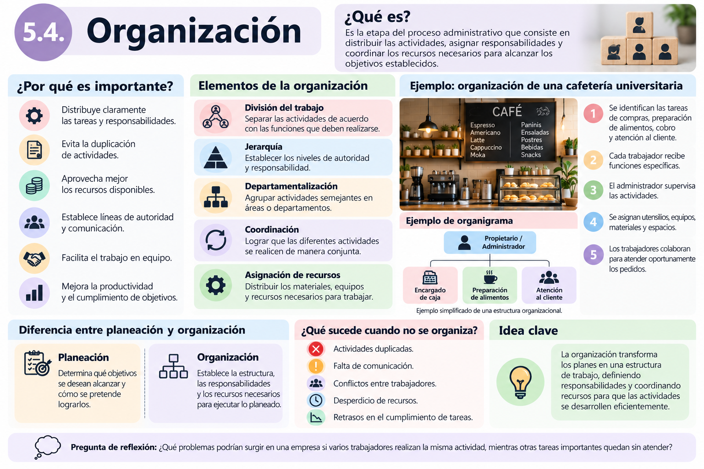
5.5. Integración de personal
5.5. Integración de personal
¿Qué es la integración de personal?
La integración de personal es la etapa del proceso administrativo que consiste en identificar, seleccionar, contratar, capacitar e incorporar a las personas adecuadas para desempeñar las funciones de una organización.
Su finalidad es contar con trabajadores que posean los conocimientos, habilidades y actitudes necesarios para cumplir los objetivos de la empresa.
En términos sencillos: integrar al personal significa conseguir a las personas adecuadas, prepararlas y proporcionarles lo necesario para realizar su trabajo.
¿Por qué es importante?
La integración de personal permite:
- Contar con trabajadores preparados para sus funciones.
- Reducir errores derivados de la falta de capacitación.
- Facilitar la adaptación de los nuevos empleados.
- Mejorar la productividad y la calidad del servicio.
- Favorecer un ambiente de trabajo colaborativo.
- Disminuir la rotación de personal.
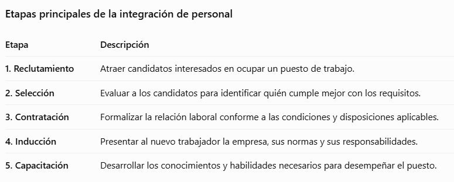
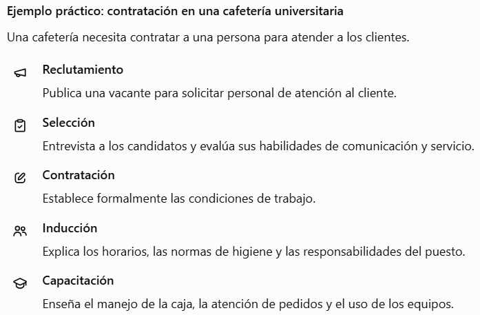
Diferencia entre organización e integración de personal
Aunque ambas etapas están relacionadas, tienen propósitos distintos.
Organización: Define los puestos, las funciones y las responsabilidades.
Integración de personal: Busca y prepara a las personas que ocuparán esos puestos.
Por ejemplo, la organización determina que una cafetería necesita un encargado de caja; la integración de personal permite seleccionar y capacitar a quien desempeñará esa función.
¿Qué sucede cuando no existe una adecuada integración de personal?
La empresa puede enfrentar dificultades como contrataciones inadecuadas, errores frecuentes, atención deficiente a los clientes, conflictos laborales y necesidad de reemplazar continuamente a sus trabajadores.
La integración de personal permite que una organización cuente con las personas adecuadas, en los puestos adecuados y con la preparación necesaria para realizar sus actividades.
¿Por qué consideras que una empresa debe capacitar a sus trabajadores, incluso cuando ya cuentan con experiencia laboral?
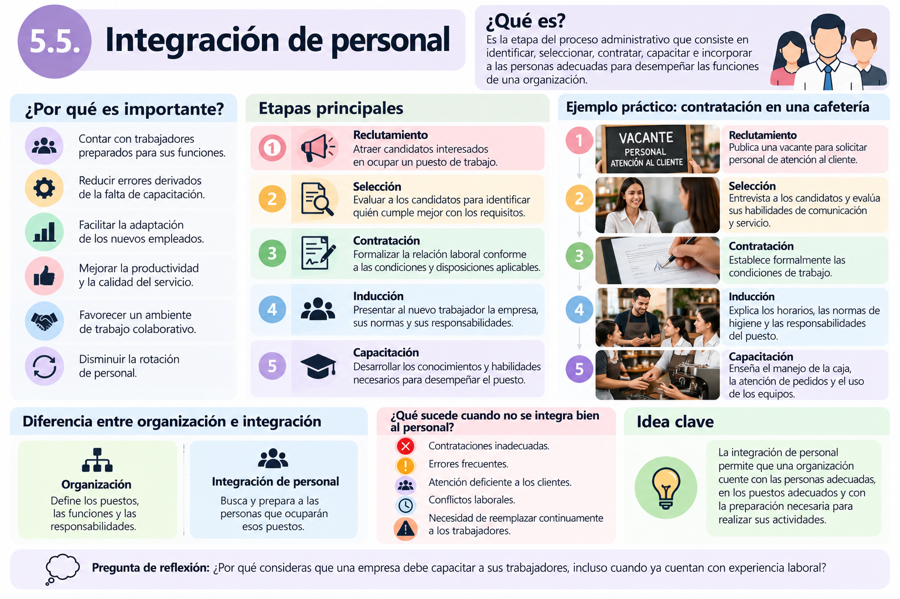
5.6. Dirección
5.6. Dirección
¿Qué es la dirección?
La dirección es la etapa del proceso administrativo que consiste en orientar, coordinar, motivar y supervisar al personal para que realice las actividades necesarias y se alcancen los objetivos de la organización.
En esta etapa, los planes se ponen en práctica mediante el trabajo de las personas.
En términos sencillos: dirigir significa guiar a un equipo, tomar decisiones y lograr que todos trabajen hacia un objetivo común.
¿Por qué es importante la dirección?
Una dirección adecuada permite:
- Coordinar las actividades de los trabajadores.
- Mantener una comunicación clara.
- Motivar al personal para mejorar su desempeño.
- Resolver problemas y conflictos.
- Tomar decisiones oportunas.
- Fomentar el trabajo en equipo y el cumplimiento de objetivos.
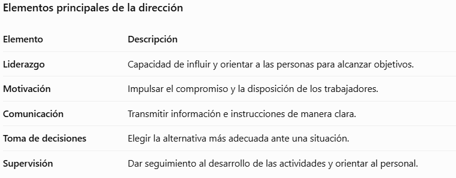
Estilos de liderazgo
Los administradores pueden utilizar diferentes estilos de liderazgo según las características del equipo y las necesidades de la empresa.
1. Liderazgo autocrático: El líder toma las decisiones y establece las instrucciones que deben seguirse. Puede resultar útil cuando se requiere actuar rápidamente.
2. Liderazgo democrático: El líder escucha las opiniones del equipo y promueve la participación antes de tomar decisiones.
3. Liderazgo liberal: El líder concede mayor autonomía a los trabajadores para realizar sus actividades, manteniendo una responsabilidad general sobre los resultados.
Ningún estilo resulta adecuado para todas las situaciones. Su aplicación depende del contexto, la experiencia del personal y los objetivos.
Ejemplo práctico: dirección en una cafetería universitaria
Durante el horario de mayor demanda, la cafetería recibe numerosos pedidos y algunos trabajadores comienzan a confundirse.
El administrador interviene de la siguiente manera:
- Liderazgo: Organiza al equipo y establece prioridades.
- Comunicación: Explica claramente quién atenderá cada actividad.
- Motivación: Reconoce el esfuerzo del personal y fomenta la colaboración.
- Toma de decisiones: Asigna temporalmente a otro trabajador para apoyar en la preparación de pedidos.
- Supervisión: Verifica que los clientes reciban sus productos correctamente.
Estas acciones permiten resolver la situación y mantener un servicio eficiente.
Diferencia entre organización y dirección
Organización: Establece quién realizará cada actividad y cómo se distribuirán los recursos.
Dirección: Guía y coordina a las personas para que esas actividades se lleven a cabo.
Por ejemplo, la organización asigna a un trabajador la responsabilidad de atender la caja; la dirección proporciona indicaciones, resuelve dificultades y motiva al trabajador para desempeñar correctamente su función.
¿Qué sucede cuando existe una dirección deficiente?
Pueden presentarse problemas como falta de comunicación, desmotivación, conflictos laborales, decisiones tardías, disminución de la productividad y dificultades para cumplir los objetivos.
La dirección convierte los planes y la estructura organizacional en acciones mediante el liderazgo, la comunicación, la motivación y la toma de decisiones.
Si fueras responsable de un equipo de trabajo y observaras que los empleados están desmotivados, ¿qué acciones realizarías para mejorar su desempeño sin recurrir únicamente a sanciones?
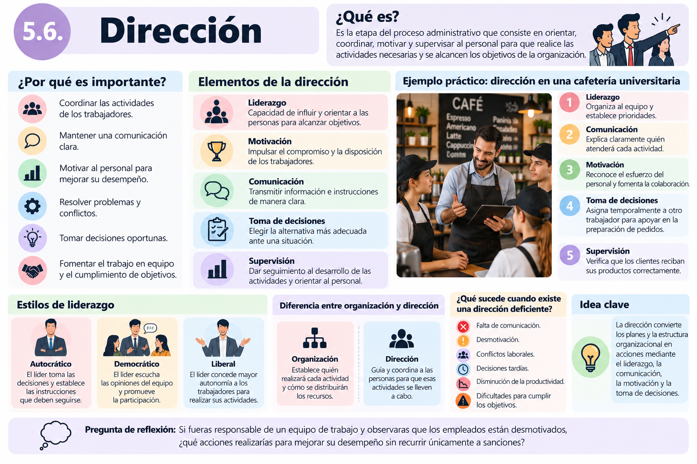
5.7. Control
5.7. Control
¿Qué es el control?
El control es la etapa del proceso administrativo que consiste en verificar que las actividades de una organización se estén realizando conforme a lo planeado, evaluar los resultados obtenidos y aplicar medidas correctivas cuando sea necesario.
Es una etapa fundamental porque permite identificar errores, detectar desviaciones y mejorar continuamente el funcionamiento de una empresa.
En términos sencillos: controlar significa comprobar si estamos logrando lo que planeamos y realizar ajustes cuando los resultados no son los esperados.
¿Por qué es importante el control?
El control permite:
- Verificar el cumplimiento de los objetivos.
- Detectar errores y problemas oportunamente.
- Evaluar el desempeño de los trabajadores y las actividades.
- Evitar desperdicios de recursos.
- Corregir desviaciones respecto a lo planeado.
- Mejorar la calidad y la productividad.
- Obtener información para tomar mejores decisiones.
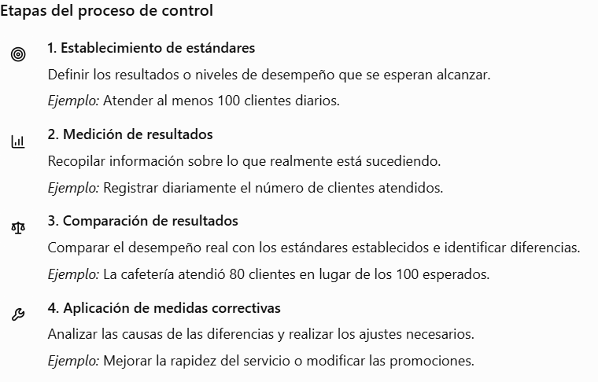
Ejemplo práctico: control en una cafetería universitaria
Una cafetería establece como objetivo vender 100 desayunos diarios. Al revisar sus registros, descubre que únicamente vende 75.
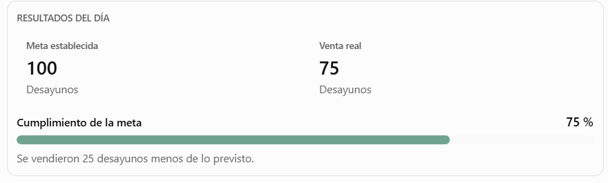
El administrador investiga las posibles causas y descubre que algunos clientes consideran demasiado lento el servicio.
Como medida correctiva, decide preparar ciertos ingredientes con anticipación y reorganizar la atención durante las horas de mayor demanda.
Posteriormente, vuelve a medir las ventas para comprobar si las mejoras funcionaron.
Este ejemplo demuestra que el control no consiste únicamente en encontrar errores, sino en utilizar la información para mejorar los resultados.
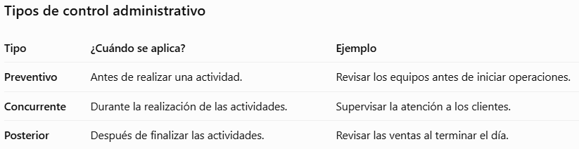
Diferencia entre planeación y control
Estas dos etapas están estrechamente relacionadas.
Planeación: Establece lo que se desea alcanzar.
Control: Comprueba si se alcanzaron los resultados y determina si es necesario realizar ajustes.
Por ejemplo, la planeación establece una meta mensual de ventas; el control permite comparar las ventas reales con esa meta.
¿Qué sucede cuando una empresa no aplica controles?
Puede enfrentar pérdidas económicas, desperdicio de materiales, incumplimiento de objetivos, disminución de la calidad, errores constantes y dificultades para identificar las causas de los problemas.
El control permite comprobar el cumplimiento de los objetivos, identificar desviaciones y aplicar mejoras. Sus resultados también proporcionan información para realizar una nueva planeación.
Si fueras administrador de una empresa y descubrieras que las ventas disminuyeron durante tres meses consecutivos, ¿qué información revisarías y qué medidas tomarías antes de decidir cómo solucionar el problema?
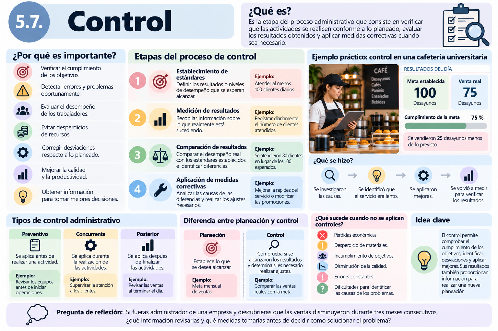